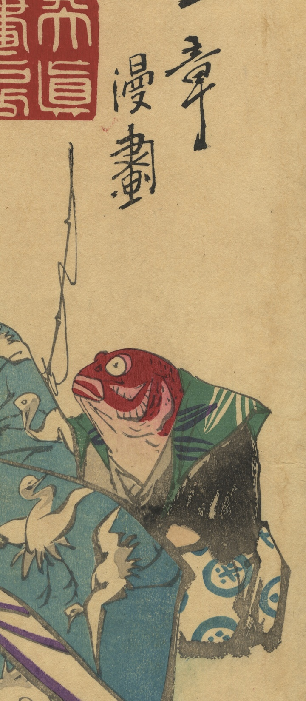

← 图鉴索引

着物をきた鯛。
著作者：川端玉章／出典：親書誌：U426_nichibunken_0472：七福神勸進帳之學；シチフクジンカンジンチョウノマナビ／日付：2025／資源識別子：U426_nichibunken_0472_0001_0000
Copyright (c)2010- International Research Center for Japanese Studies, Kyoto, Japan. All rights reserved.